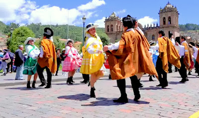
Carnaval abanquino
Recientemente declarado como Patrimonio Cultural de la Nación es uno de los carnavales más alegres del Perú,
por la alegría que deslumbra su gente cuando acude a esta festividad, esta celebración se realiza en los meses
de marzo a abril.
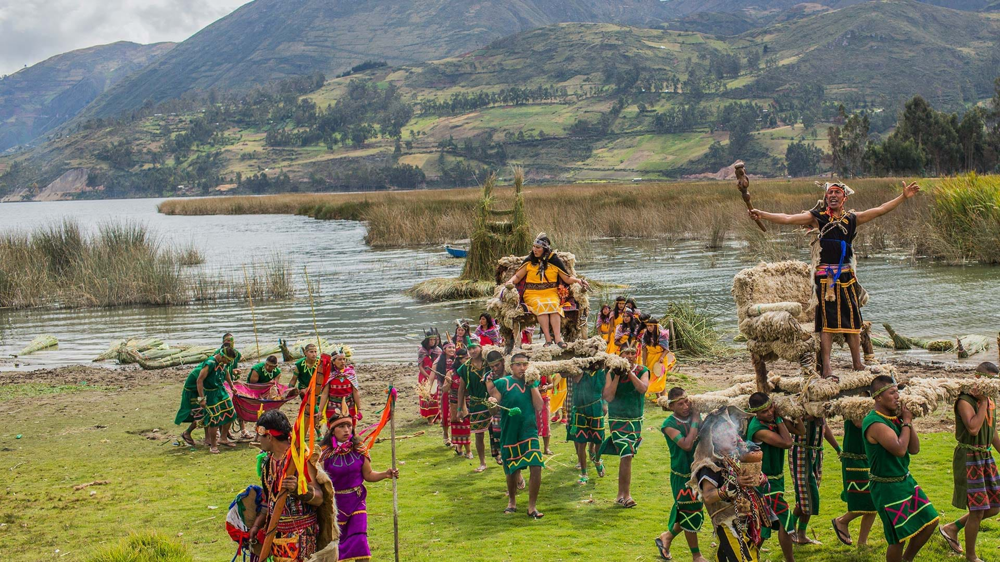
Sondor Raymi
El Sondor Raymi, también conocido con el nombre de Epopeya Chanka, es una celebración que se lleva a cabo
dentro del distrito de Pacucha, en la provincia de Andahuaylas en el departamento y región

Fiesta Mayor Señor de Ánimas
La Fiesta Mayor Señor de Ánimas, conocida también como la Fiesta Mayor de Apurímac, es una celebración
religiosa que se lleva a cabo en el distrito de Chalhuanca, dentro de la provincia de Aymaraes.
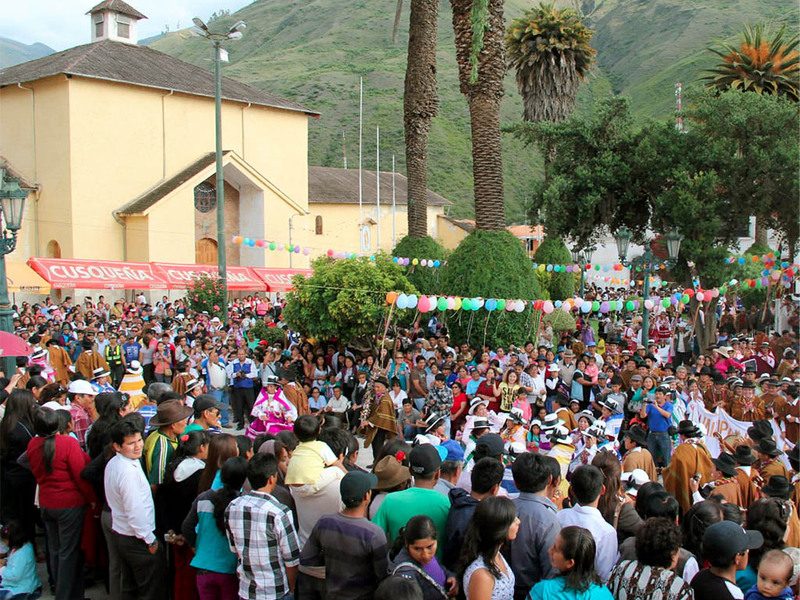
Semana Turística.
La Semana Turística de Abancay, provincia que se encuentra en el departamento de Apurímac, es una celebración
anual que no presenta una fecha fija, pero que suele realizarse en la época de aniversario provincial, es decir,
en el mes de noviembre, aunque también han habido años donde esta se celebra en el mes de octubre.
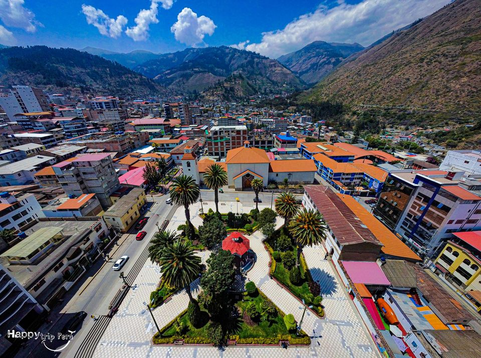
Pʟᴀᴢᴀ ᴘʀɪɴᴄɪᴘᴀʟ.
Esta bella plaza testigo de grandes acontecimientos históricos ocurridos en el tiempo de las cuales hace
referencia que antiguamente era un cementerio, posterior un ruedo de toros y hoy en día se encuentra rodeada de
7 palmeras (1910)🌴 que representan a nuestras provincias de la región.
Abancay
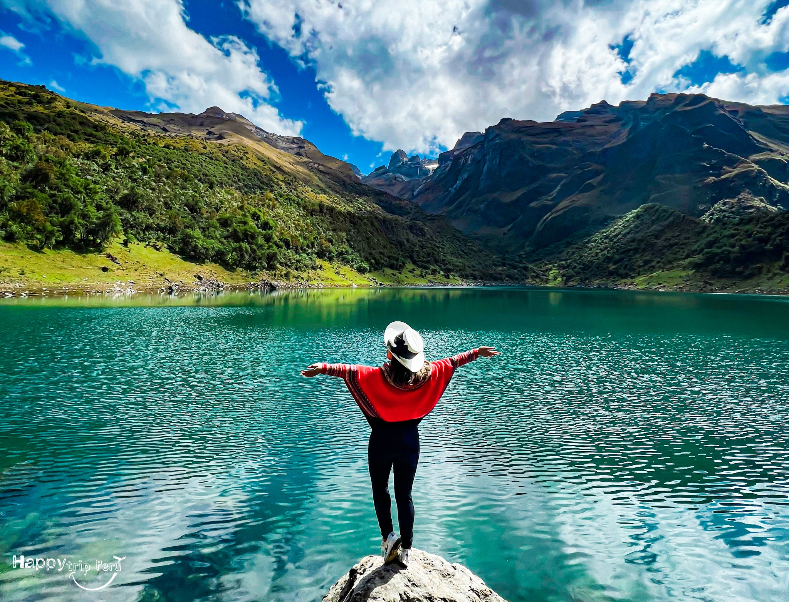
Sᴀɴᴛᴜᴀʀɪᴏ Nᴀᴄɪᴏɴᴀʟ ᴅᴇ Aᴍᴘᴀʏ
está enclavado en medio de los Andes conformando una especie de “isla biológica”. Además, forma parte del
concatenamiento de los picos nevados de la Cordillera de Vilcabamba y de los Andes del sur,
En su interior se contempla una enorme diversidad de riachuelos y manantiales que le confieren una belleza e
importancia única al lugar.
Distancia movilidad
20 minutos
Distancia caminata
1 a 6 horas
Altitud
2900 - 5235 m.s.n.m.
Abancay
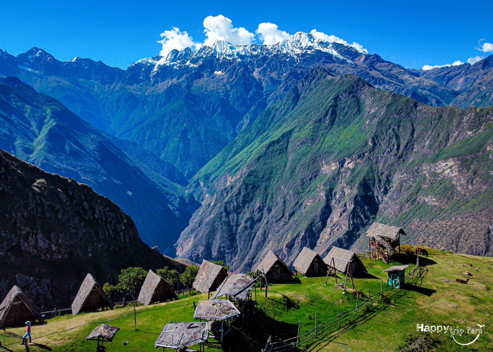
Cᴀɴ̃ᴏ́ɴ ᴅᴇʟ Aᴘᴜʀɪ́ᴍᴀᴄ
Considerado uno de los más profundos del mundo pero muy poco conocido, con una maravillosa vista panorámica de
la cordillera de Los Andes y el majestuoso vuelo de los cóndores que te dejarán pasmado.
Mirador de Huayhuacalle (Cachora)
Mirador de Capuliyoc (San Pedro de Cachora)
Mirador de Capitán Rumi (Curahuasi)
Mirador de San Cristobal (Curahuasi)
Mirador de Kiuñalla (Huanipaca)
Mirador de Qoriwayrachina (Curahuasi)
Distancia movilidad
2 horas
Distancia caminata
5 minutos
Altitud
Desde 3000 m.s.n.m.
Abancay
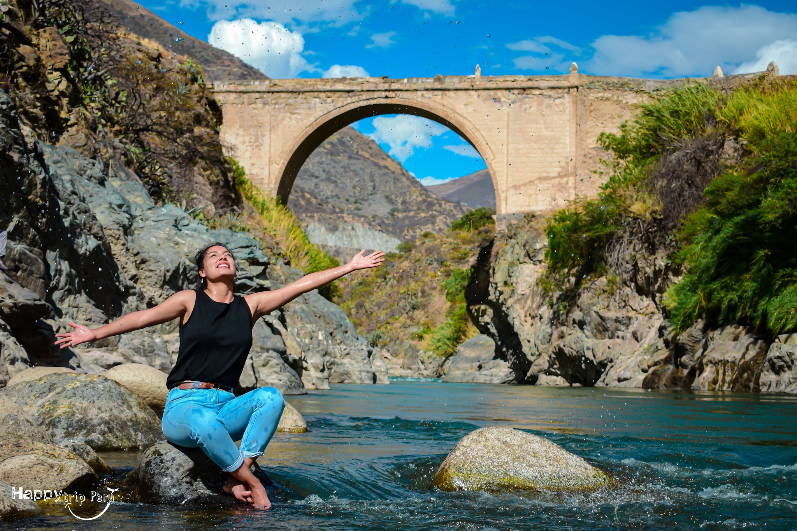
Puente colonial de Pachachaca
antiguamente un puente colgante en la época incaica y con una construcción posterior en el 1654 con una
duración de casi más de 100 años en poder terminarlo, considerado uno de los puentes coloniales más hermosos de
la época por su impotancia, sucesos históricos y ubicación.
Distancia movilidad
25 minutos
Abancay
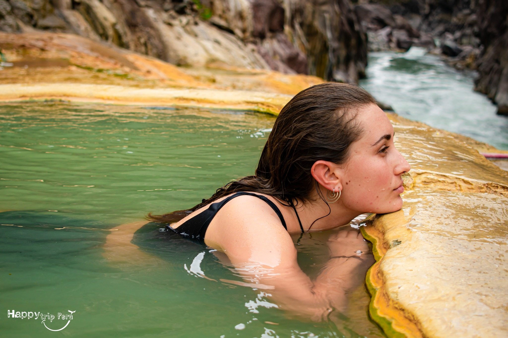
Posᴀs ᴛᴇʀᴍᴀʟᴇs ᴅᴇ Sᴀɴᴛo Toᴍᴀs
ubicado a las orillas del Río Pachachaca y el cañón del mismo nombre, formada por ojos de agua que filtran del
las rocas de las cuales tienes colores diferentes adquiridos por las sales minerales (sulfato, carbono y
cloruro) que tienen un gran poder curativo al que entra a esta belleza natural.
Distancia movilidad
25 minutos
Distancia caminata
20 minutos
Abancay
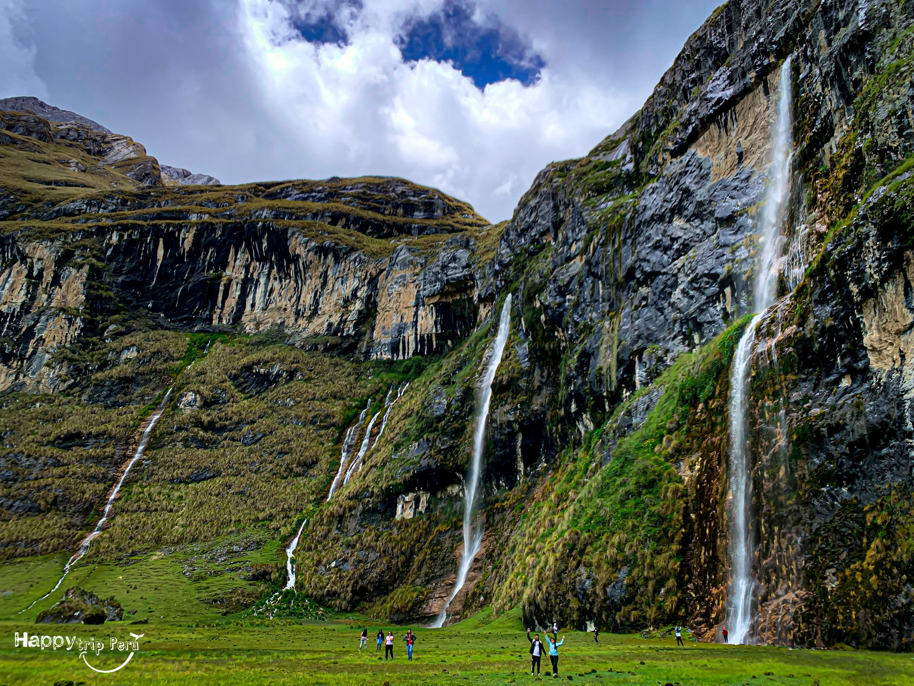
Cᴀscᴀᴅᴀs ᴅᴇ Uᴍᴀᴛuʀco
ubicada en el distrito de Circa, es lo más majestuoso que uno puede ver si se trata de cascadas en abancay ya
que se forman hasta 4 caídas de más de 70 metros de altura rodeada de riachuelos por donde se le pueda apreciar
y con una Laguna ubicada en la parte superior.
Distancia movilidad
2 horas
Distancia caminata
30 minutos
Abancay
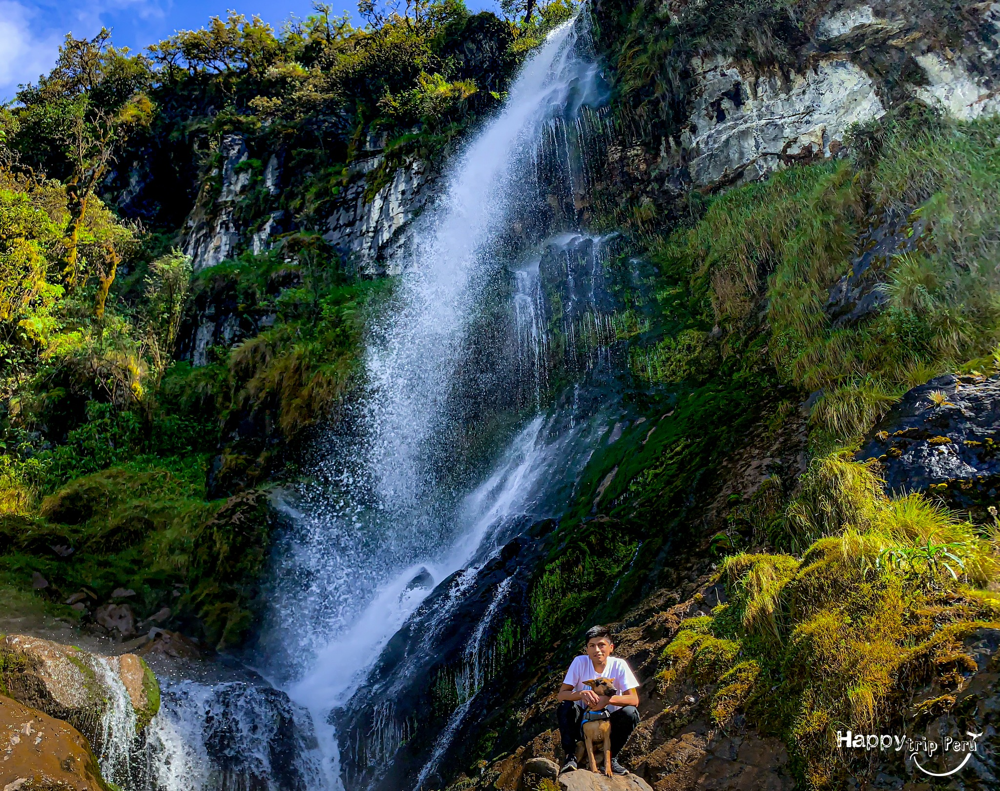
Cᴀscᴀᴅᴀ ᴅᴇ Fᴀccʜᴀ
una cascada muy hermosa de aproximadamente 50 metros de altura con una caída de dos saltos originada por la
Laguna de Yuraccasa, es parte del santuario nacional del Ampay.
Distancia movilidad
30 minutos
Distancia caminata
2 horas
Temporada
Diciembre a junio
Abancay
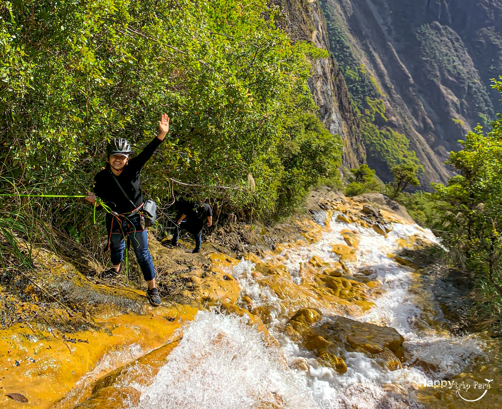
Cᴀsᴄᴀᴅᴀ ᴘᴇᴛʀɪfɪᴄᴀᴅᴀ ᴅᴇ Qᴇʟʟᴏʏᴀᴋᴜ
𝖫𝖺𝗌 𝖼𝖺𝗌𝖼𝖺𝖽𝖺𝗌 𝗉𝖾𝗍𝗋𝗂𝖿𝗂𝖼𝖺𝖽𝖺𝗌 𝗌𝗈𝗇 𝖿𝗈𝗋𝗆𝖺𝖼𝗂𝗈𝗇𝖾𝗌 𝗎́𝗇𝗂𝖼𝖺𝗌, 𝗊𝗎𝖾
𝖽𝖾𝖻𝗂𝖽𝗈 𝖺 𝗀𝗋𝖺𝗇𝖽𝖾𝗌 𝖼𝖺𝗇𝗍𝗂𝖽𝖺𝖽𝖾𝗌 𝖽𝖾 𝗌𝗎𝗅𝖿𝗎𝗋𝗈𝗌 𝗒 𝖼𝖺𝗋𝖻𝗈𝗇𝖺𝗍𝗈́ 𝖽𝖾
𝖼𝖺𝗅𝖼𝗂𝗈 𝗊𝗎𝖾 𝖾𝗑𝗂𝗌𝗍𝖾𝗇 𝖾𝗇 𝖾𝗌𝗍𝗈𝗌 𝗌𝗂𝗍𝗂𝗈𝗌 𝗍𝗂𝖾𝗇𝖾𝗇 𝗎𝗇 𝖼𝗈𝗅𝗈𝗋 𝗆𝗎𝗒
𝗉𝖺𝗋𝗍𝗂𝖼𝗎𝗅𝖺𝗋 𝖾𝗇 𝗌𝗎𝗌 𝖺𝗀𝗎𝖺𝗌.
Distancia movilidad
1 hora 20 min
Abancay
— en Abancay.
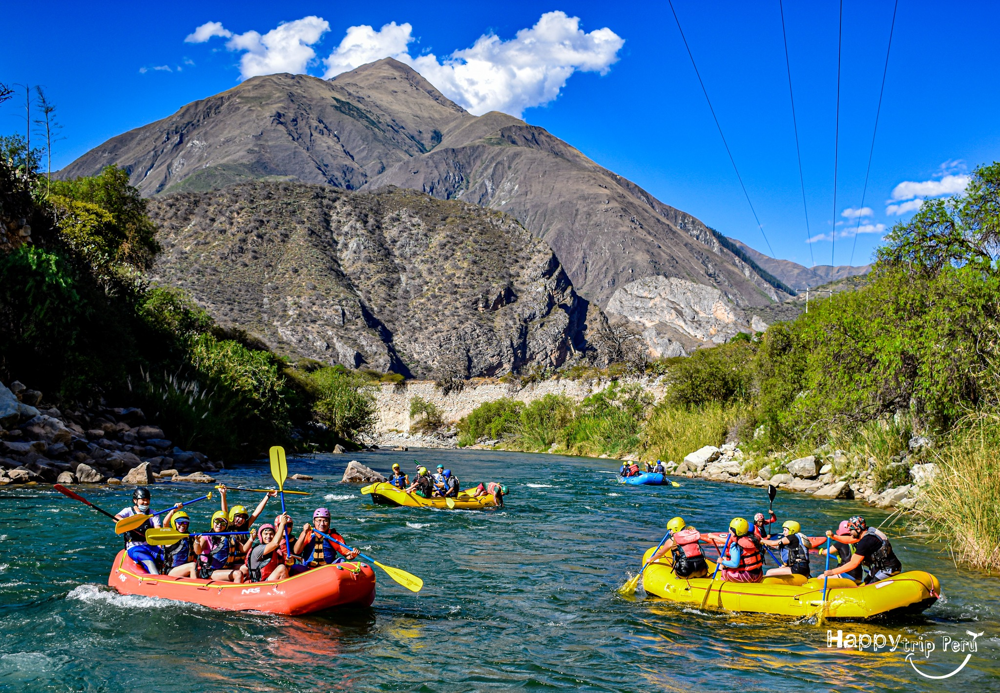
Yᴀᴄᴄᴀ.
𝑉𝑖𝑣𝑒 𝑢𝑛𝑎 𝑔𝑟𝑎𝑛 𝑎𝑣𝑒𝑛𝑡𝑢𝑟𝑎.!!
rodeado de los apus Pisti y Terecmana, yacca cuenta con una hermosa hacienda de época en el siglo VXIII con más
de 2 mil hectáreas donde se desarrolló la producción de la caña de azúcar y sus derivados.
De igual manera hoy en día se practica el canotaje y kayak siendo un atractivo para sus visitantes quienes
pueden ser parte de esta experiencia 💦 y después poder degustar en cada quinta campestre los típicos platos
abanquinos entre otros.
40 minutos
-
2064 m.s.n.m.
todo el año
Abancay
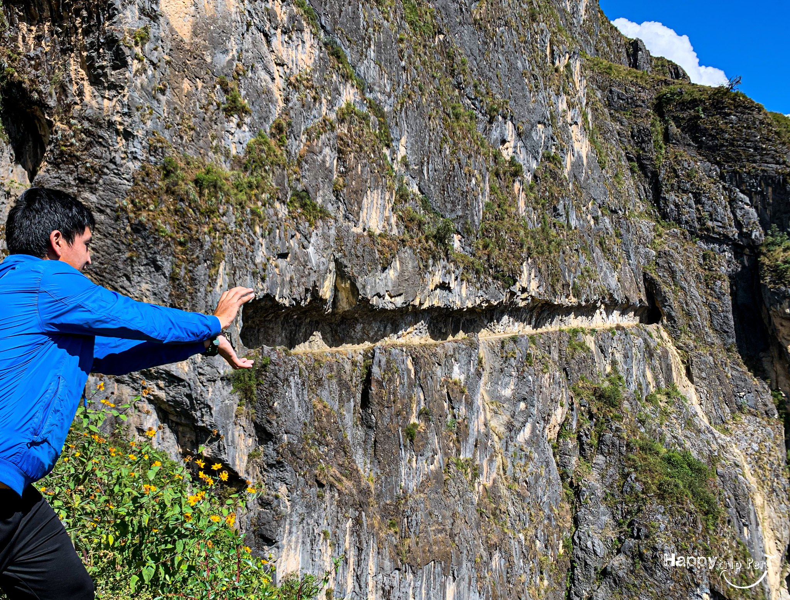
Tuɴᴇʟᴇs ᴅᴇ Kᴀʀᴋᴀᴛᴇʀᴀ.
con más de 20 años de construcción desde los años 80, hoy en día se convierte en un atractivo turístico, con un
recorrido de más de 1 kilómetro pasando por 4 túneles de gran distancia y aumentando la adrenalina a sus
visitantes quienes pueden apreciar su gran magnitud en en estas montañas de pendientes rocosas.
Continuando esta ruta se puede encontrar otras cascadas y un bosque virgen de flora y fauna Silvestre, al igual
que las comunidades de Juan Velazco, Qolla, Tacmara, karquequi, etc.
1 hora
-
3153 m.s.n.m.
todo el año
Abancay
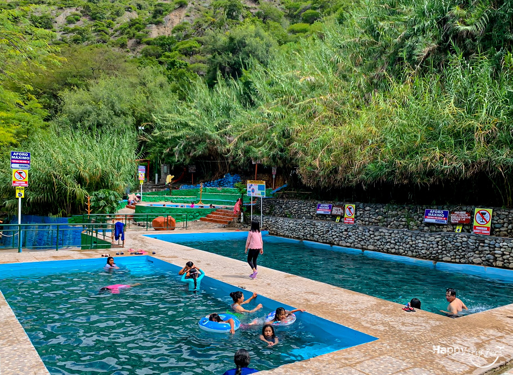
Pisciɴᴀs ᴛᴇʀᴍᴀʟᴇs ᴅᴇ Ccoɴoc
se encuentran el el distrito de Curahuasi junto a la rivera del Río Apurímac, este lugar es muy conocido y
concurrido por sus poderes curativos. Cuenta con un mini complejo turístico que brinda servicios de
alimentación, hospedaje, camping, zona de fogata o parrilla ideales para ir en familia o con amigos.
2 horas
-
1780 m.s.n.m.
todo el año
Abancay
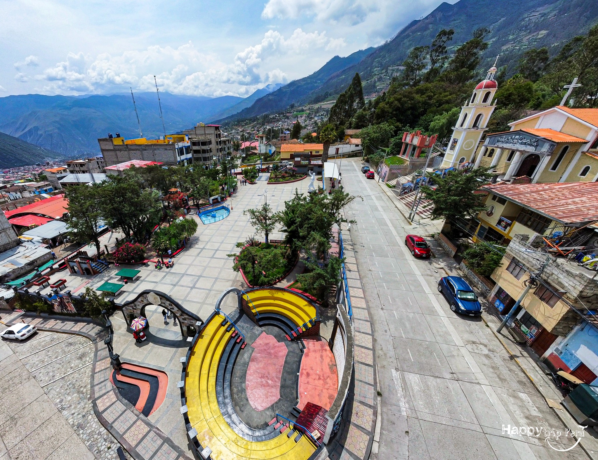
Pʟᴀzᴀ ᴛᴇᴍᴀ́ᴛɪᴄᴀ ᴅᴇ Tᴀᴍʙuʀco
Cuna de Micaela Bastidas Puyucahua, prócer de la independencia hispanoamericana.
Tamburco hoy tiene un nuevo rostro con esta maravillosa plaza con murales en alto relieve de las manifestaciones
culturales que trascendieron a lo largo de la historia y es ahí también donde se puede apreciar imágenes de
algunos recursos turísticos de la zona, imágenes de la flora y fauna silvestre del santuario, la nueva capilla
del señor de exaltación, etc.
8 minutos
-
2600 m.s.n.m.
todo el año
Abancay
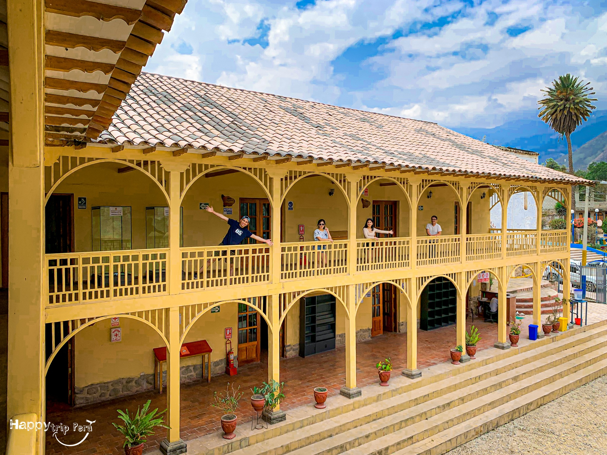
Mᴜsᴇᴏ Aʀqᴜᴇᴏʟᴏ́ɢɪᴄᴏ Aɴᴛʀᴏᴘᴏʟᴏ́ɢɪᴄᴏ ʏ Cᴀsᴀ ʜᴀᴄɪᴇɴᴅᴀ ᴅᴇ́ Iʟʟᴀɴʏᴀ.
Patrimonio cultural de la nación, es aquí donde uno puede conocer más acerca de nuestra historia, arqueología,
etc, ya que cuenta con uno de los únicos museos de la región.
Es una de las primeras haciendas de época colonial (1592) de estilo arquitectónico francés, del cual se
desarrolló la mejor producción del aguardiente de caña, chancaca o panela y entre otros, incluso habiéndose
creado su propia moneda que valía por una arroba de aguardiente (la letona).
Testimonio de la gran producción del destilado también llegó a ganar un concurso mundial en Francia como uno de
los destilados puros a base de caña de azúcar, hoy en día esta gran historia forma parte de “LA RUTA de la CAÑA”
como un tour infaltable de recorrido a los trapiches y degustación si visitas abancay.
20 minutos
-
1880 m.s.n.m.
todo el año
Abancay
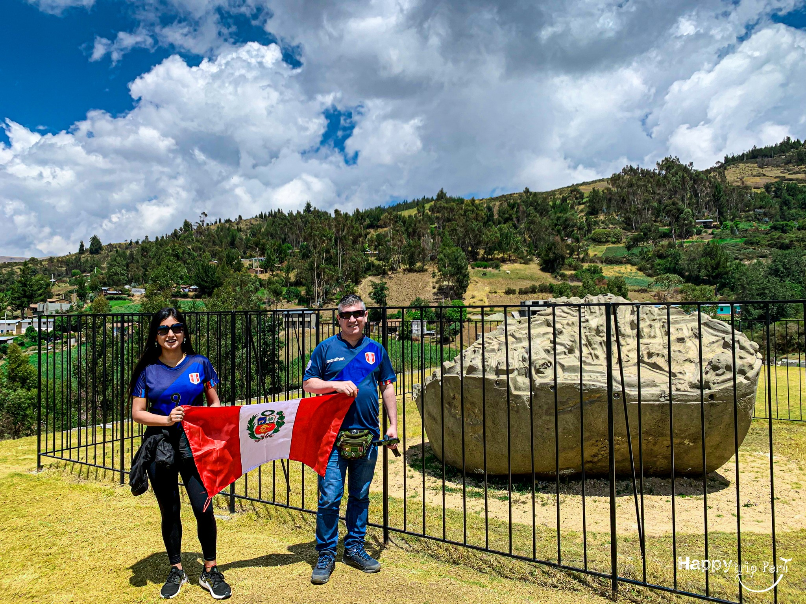
Cᴇɴᴛʀᴏ Aʀqᴜᴇᴏʟᴏ́ɢɪᴄᴏ ᴅᴇ Sᴀʏᴡɪᴛᴇ.
portentoso templo inca, uno de los iconos más representativos de la Cultura en donde se encuentra la única
maqueta lítica de más de 2 metros de altura, una circunferencia de 10 metros y con más de 203 figuras zoomorfas,
antropomorfos, arquitectónicos, etc.
Cuenta con más de 6 sectores como:
- Monolito
- Recintos y objetos litúrgicos
- Fuentes litúrgicas y escalinatas
- Andenes ornamentales
- Usnu pampa
- Monolito de presagios (Rumi Wasi)
- Intiwatana
- Cementerios
También puede ser encontrada acuñada en la moneda de un sol (riqueza y orgullo del perú 2012).
1 hora
-
3500 m.s.n.m.
todo el año
Abancay
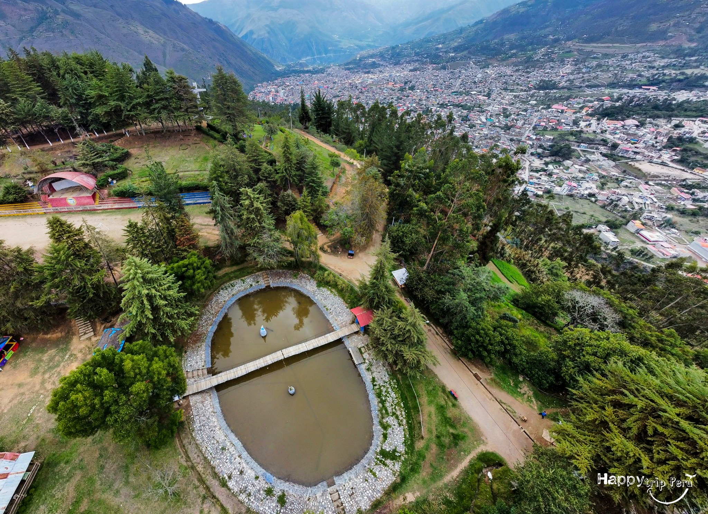
Pᴀʀqᴜᴇ ᴇᴄᴏʟᴏ́ɢɪᴄᴏ, ᴢᴏᴏʟᴏ́ɢɪᴄᴏ ʏ ᴍɪʀᴀᴅᴏʀ ᴅᴇ Tᴀʀᴀᴄᴄᴀsᴀ
.
lleno de vegetación arbórea y eucaliptos, este parque posee zonas de interés como: una Laguna artificial con un
largo puente colgante, juegos recreativos, zonas de descanso, un pequeño zoológico de animales de la región y
otros rescatados, cuenta también con un gran mirador natural hacia la ciudad de abancay ubicado junto a una Cruz
de más de 8 metros de altura.
20 minutos
-
2828 m.s.n.m.
todo el año
Abancay

Baños termales de Pincahuacho
Situado a siete kilómetros de Chalhuanca, en la comunidad campesina de Pincahuacho en el distrito de
Chalhuanca capital de provincia de Aymaraes departamento de Apurímac; a una altura de 3160 metros sobre el nivel
del mar, en la margen izquierda del río Chalhuanca.
20 minutos (Chalhuanca)
40 minutos aprox
2897 m.s.n.m.
todo el año
Aymaraes